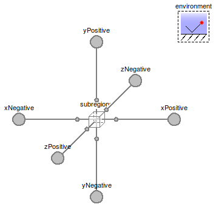

Table of Contents
- User's Guide
- Blocks
- Conditions
- Assemblies
- Regions
- Subregions
- Connectors
- Characteristics
- Units
- Quantities
- BaseClasses
Download
- Latest: FCSys-2.0.zip (**Please check back soon or contact kdavies4 at gmail.com.)

| Name | Description |
|---|---|
| CaCL | Cathode catalyst layer |
| CaCGDL | Integrated cathode catalyst/gas diffusion layer |

This model describes the storage, reaction, and transport of chemical/electrochemical species in and through the cathode catalyst layer of a PEMFC. The x axis is intended to extend from the anode to the cathode. The y axis extends along the length of the channel and the z axis extends across the width of the channel.
Assumptions:
For more information, see the Region model.
Extends from Region (Base model for a 3D array of subregions).
| Type | Name | Default | Description |
|---|---|---|---|
| NumberAbsolute | x | 0.25 | Volumetric porosity [1] |
| Geometry | |||
| Length | L_x[:] | fill(28.7*U.micro*U.m/1, 1) | Lengths along the x axis (Lx) [l] |
| Length | L_y[:] | fill(1*U.m/1, 1) | Lengths along the y axis (Ly) [l] |
| Length | L_z[:] | fill(5*U.mm/1, 1) | Lengths along the z axis (Lz) [l] |
| Initialization | |||
| NumberAbsolute | lambda_IC | 14 | Initial molar ratio of H2O to SO3H (λIC) [1] |
| Assumptions | |||
| Axes with faces included | |||
| Boolean | inclFacesX | true | X |
| Boolean | inclFacesY | false | Y |
| Boolean | inclFacesZ | false | Z |
| Type | Name | Description |
|---|---|---|
| FaceBus | xNegative[n_y, n_z] | Negative face along the x axis |
| FaceBus | xPositive[n_y, n_z] | Positive face along the x axis |
| FaceBus | yNegative[n_x, n_z] | Negative face along the y axis |
| FaceBus | yPositive[n_x, n_z] | Positive face along the y axis |
| FaceBus | zNegative[n_x, n_y] | Negative face along the z axis |
| FaceBus | zPositive[n_x, n_y] | Positive face along the z axis |
model CaCL "Cathode catalyst layer" //extends FCSys.BaseClasses.Icons.Names.Top4; extends Region( L_x=fill(28.7*U.micro*U.m/1, 1), L_y=fill(1*U.m/1, 1), L_z=fill(5*U.mm/1, 1), final inclFacesX=true, inclFacesY=false, inclFacesZ=false, redeclare FCSys.Subregions.Subregion subregions[n_x, n_y, n_z]( each inclLinX=false, each gas( inclH2O=true, inclN2=true, inclO2=true, H2O( p_IC=environment.x_H2O*environment.p, xNegative(isobaric=true), xPositive(isobaric=false)), N2( p_IC=(1 - environment.x_H2O)*(1 - environment.x_O2_dry)*environment.p, xNegative(isobaric=false), xPositive(isobaric=false)), O2( p_IC=(1 - environment.x_H2O)*environment.x_O2_dry*environment.p, xNegative(isobaric=false), xPositive(isobaric=false))), each graphite( 'inclC+'=true, 'incle-'=true, 'C+'(V_IC=V - xV), 'e-'(xNegative(isobaric=false), xPositive(isobaric=false))), each ionomer( 'inclC19HF37O5S-'=true, 'inclH+'=true, 'C19HF37O5S-'(V_IC=V - xV), 'H+'(xNegative(isobaric=false), xPositive(isobaric=false)), H2O(xNegative(isobaric=false), xPositive(isobaric=false))), each liquid(inclH2O=true, H2O( V_IC=0, xNegative(isobaric=false), xPositive(isobaric=false))))); //'e-'(xNegative(isobaric=true), //'H+'(xPositive(isobaric=true), //O2( // each ionomer('C19HF37O5S-'(V_IC=0.15*V)))); // // //initMethPartNum=InitMethScalar.ReactionRate // See AnCLs.AnCL for data on additional materials. parameter Q.NumberAbsolute x(nominal=1) = 0.25 "Volumetric porosity"; parameter Q.NumberAbsolute lambda_IC=14 "Initial molar ratio of H2O to SO3H (λIC)"; // TODO: Add H2O to the ionomer according to lambda_IC. // TODO: Include reaction to absorb H2O into ionomer. // Assume zero volume of H2O in the ionomer? // Auxiliary variables (for analysis) output Q.Number x_H2O[n_x, n_y, n_z](each stateSelect=StateSelect.never) = subregions.gas.H2O.N ./ (subregions.gas.H2O.N + subregions.gas.N2.N + subregions.gas.O2.N) if environment.analysis and hasSubregions "Molar concentration of H2"; output Q.Number x_N2[n_x, n_y, n_z](each stateSelect=StateSelect.never) = subregions.gas.N2.N ./ (subregions.gas.H2O.N + subregions.gas.N2.N + subregions.gas.O2.N) if environment.analysis and hasSubregions "Molar concentration of N2"; output Q.Number x_O2[n_x, n_y, n_z](each stateSelect=StateSelect.never) = ones( n_x, n_y, n_z) - x_H2O - x_N2 if environment.analysis and hasSubregions "Molar concentration of O2"; protected final parameter Q.Volume xV=x*V "Gas volume";protected outer Conditions.Environment environment "Environmental conditions"; end CaCL;
See the information in the CaCL and CaGDL models
Extends from CaCL (Cathode catalyst layer).
| Type | Name | Default | Description |
|---|---|---|---|
| NumberAbsolute | x | 0.25 | Volumetric porosity [1] |
| Geometry | |||
| Length | L_x[:] | fill((28.7*U.micro*U.m + 0.3... | Lengths along the x axis (Lx) [l] |
| Length | L_y[:] | fill(1*U.m/1, 1) | Lengths along the y axis (Ly) [l] |
| Length | L_z[:] | fill(5*U.mm/1, 1) | Lengths along the z axis (Lz) [l] |
| Initialization | |||
| NumberAbsolute | lambda_IC | 14 | Initial molar ratio of H2O to SO3H (λIC) [1] |
| Assumptions | |||
| Axes with faces included | |||
| Boolean | inclFacesY | false | Y |
| Boolean | inclFacesZ | false | Z |
| Type | Name | Description |
|---|---|---|
| FaceBus | xNegative[n_y, n_z] | Negative face along the x axis |
| FaceBus | xPositive[n_y, n_z] | Positive face along the x axis |
| FaceBus | yNegative[n_x, n_z] | Negative face along the y axis |
| FaceBus | yPositive[n_x, n_z] | Positive face along the y axis |
| FaceBus | zNegative[n_x, n_y] | Negative face along the z axis |
| FaceBus | zPositive[n_x, n_y] | Positive face along the z axis |
model CaCGDL "Integrated cathode catalyst/gas diffusion layer" extends CaCL(L_x=fill((28.7*U.micro*U.m + 0.3*U.mm)/1, 1));end CaCGDL;